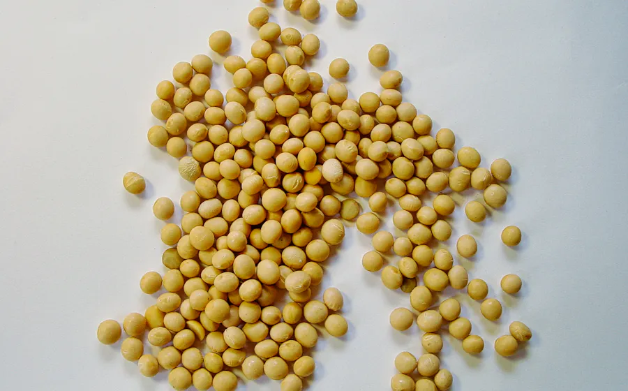

à quoi ça sert ?
B12, protéines, fer, additifs : ce qu’ils font dans ton corps, où les trouver, et comment les repérer sur l’étiquette.

Chargement…
B12, protéines, fer, additifs : ce qu’ils font dans ton corps, où les trouver, et comment les repérer sur l’étiquette.

Chargement…